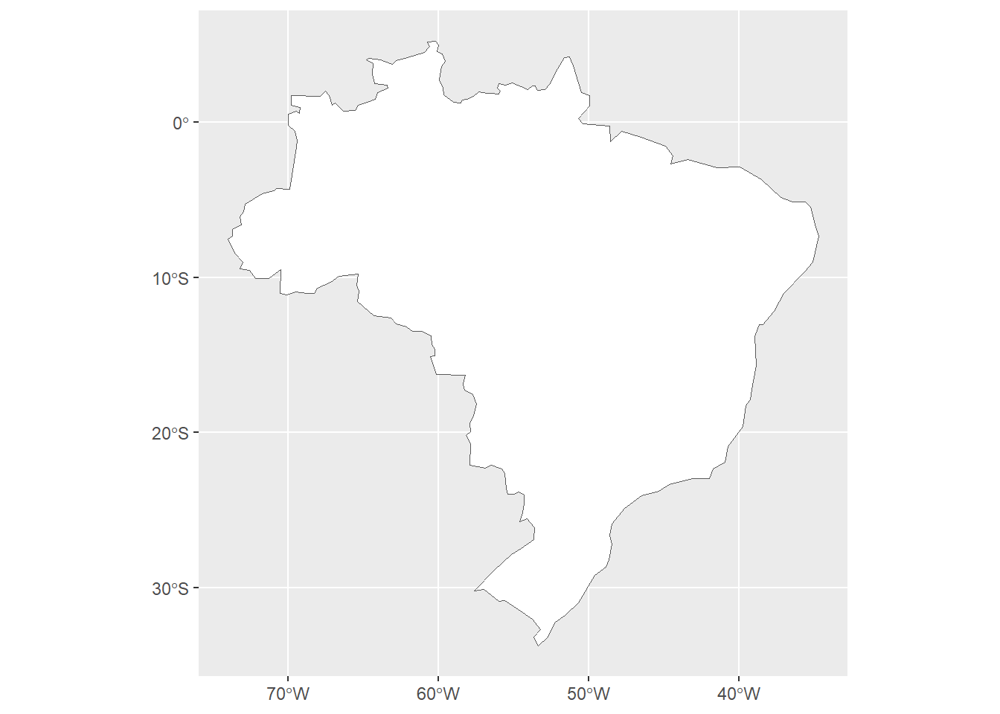
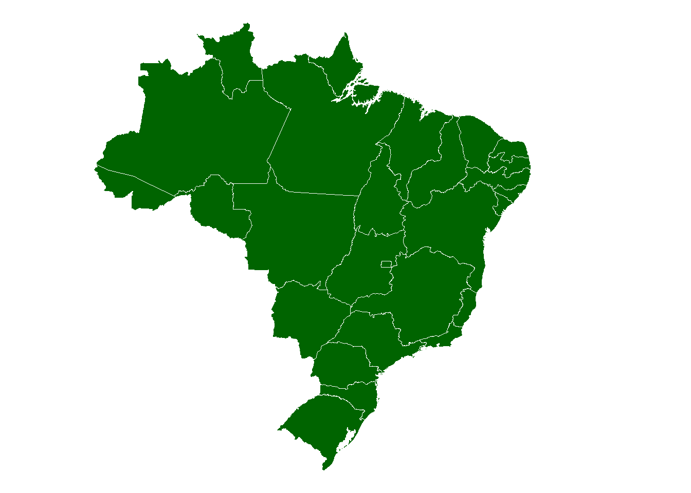
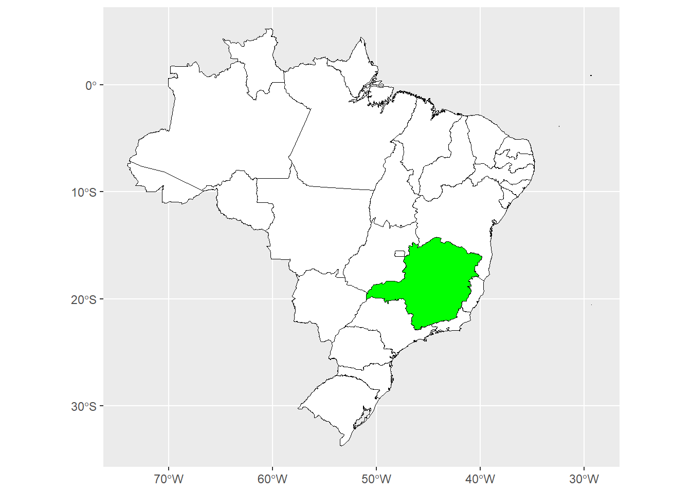
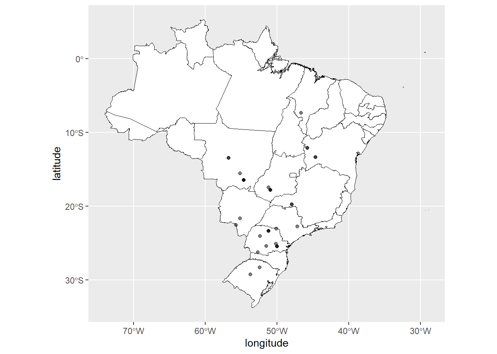
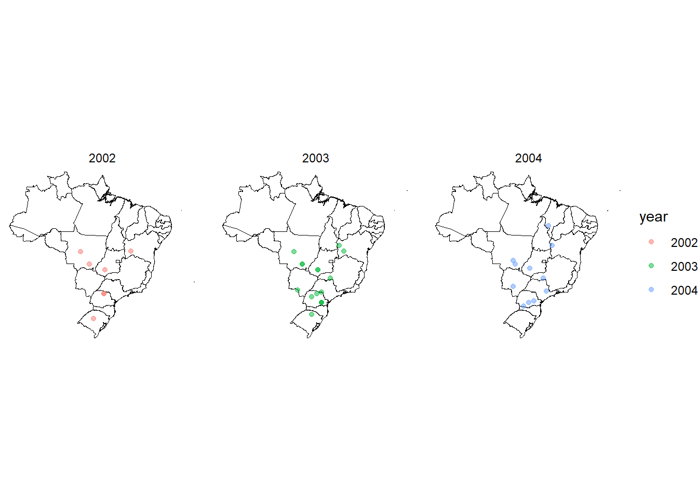
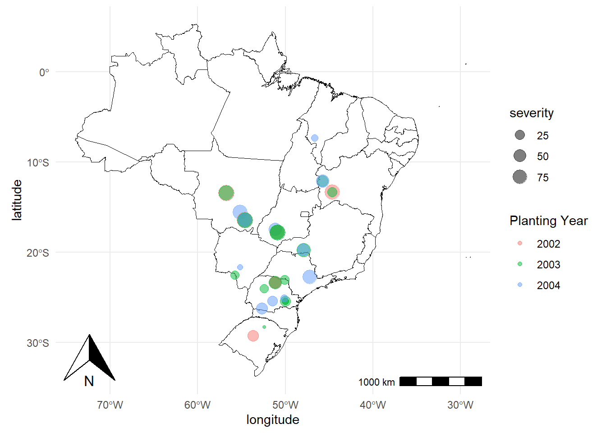
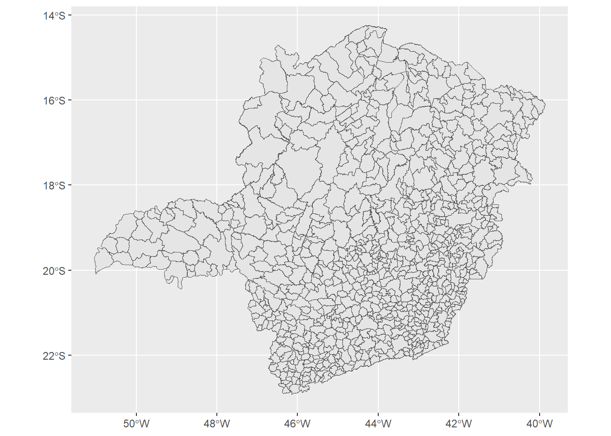

library(tidyverse)
library(readxl)
library(ggplot2)
library(remotes)
remotes::install_github("emdelponte/r4pde")
library(r4pde)
library(rnaturalearth)
library(rnaturalearthhires)aula16
Carregar pacotes
##Instalar pacote do github:
remotes::install_github("ropensci/rnaturalearthhires")Mapa do Brasil
Para plotar o mapa do país, usa-se a função “ne_countries”
sbr <- RustSoybean
BRA <- ne_countries(country = "Brazil",
returnclass = "sf")
ggplot(BRA) +
geom_sf(fill = "white")
Plotar os estados
BRA <- ne_states(country = "Brazil",
returnclass = "sf")
ggplot(BRA) +
geom_sf(color = "white",
fill = "darkgreen") +
theme_void()
Selecionar um estado
BRA <- ne_states(country = "Brazil",
returnclass = "sf")
MG <- BRA |> filter(name_en == "Minas Gerais")
ggplot(BRA) +
geom_sf(color = "black",
fill = "white") +
geom_sf(data = MG, color = "black",
fill = "green")
Localização de pontos especificos dos dados (latitude e longitude)
Para plotar os pontos, precisa-se das coordenadas de onde foram coletados os pontos. Ex.: pontos de coleta - precisa-se coletar as coordenadas para plotar em um mapa (no caso de ser só o municipio, pode pegar na internet as coordenadas).
BRA <- ne_states(country = "Brazil",
returnclass = "sf")
MG <- BRA |> filter(name_en == "Minas Gerais")
ggplot(BRA) +
geom_sf(color = "black",
fill = "white") +
geom_point(data = sbr, aes(longitude, latitude), alpha = 0.5)
Separar a data em dia, mês e ano
sbr2 <- sbr |>
separate(planting, into =
c("year", "month", "day"), sep = "-", remove = FALSE)
BRA <- ne_states(country = "Brazil",
returnclass = "sf")
MG <- BRA |> filter(name_en == "Minas Gerais")
ggplot(BRA) +
geom_sf(color = "black",
fill = "white") +
geom_point(data = sbr2,
aes(longitude, latitude, color = year), alpha = 0.5)+
facet_wrap(~year)+
theme_void()
Inserir rosa dos ventos e a escala no mapa
library(ggspatial)
ggplot(BRA) +
annotation_north_arrow(location = "bl")+
annotation_scale(location = "br")+
geom_sf(color = "black",
fill = "white") +
geom_point(data = sbr2,
aes(longitude, latitude, color = year, size = severity), alpha = 0.5)+
labs(color = "Planting Year")+
theme_minimal()+
theme(legend.position = "right")
Malha de municípios
Baixar arquivo “shape” dos municípios em um site do IBJE Usar pacote rgdal
Para todos os municípios, chunk comentado
#library(rgdal)
#library(sf)
#shapefile <- st_read("Aula16_BR_Municipios_2022/BR_Municipios_2022.shp")
#ggplot(BRA) +
#geom_sf(data = shapefile)Para MG
shapefile <- st_read("MG_Municipios_2022/MG_Municipios_2022.shp")Reading layer `MG_Municipios_2022' from data source
`C:\Users\rbarb\OneDrive\Área de Trabalho\Mestrado UFV\Disciplinas\FIP 606 Análise e Visualização de Dados em Fitopatologia\Aulas\Aula 19 - Quarto website\website\R_codes\MG_Municipios_2022\MG_Municipios_2022.shp'
using driver `ESRI Shapefile'
Simple feature collection with 853 features and 4 fields
Geometry type: POLYGON
Dimension: XY
Bounding box: xmin: -51.04608 ymin: -22.92276 xmax: -39.85683 ymax: -14.23318
Geodetic CRS: SIRGAS 2000ggplot(MG)+
geom_sf(data = shapefile)